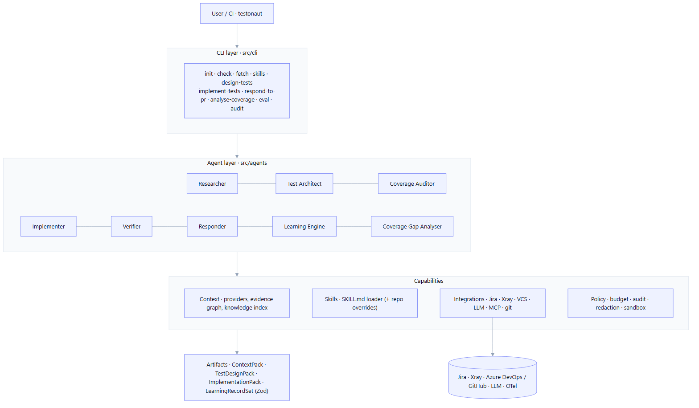
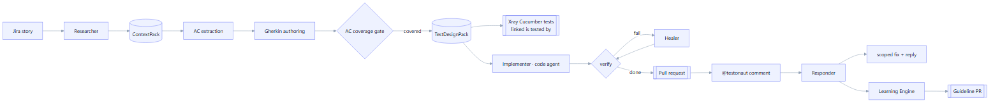

Manso
An end-to-end AI testing agent: it turns a Jira ticket into a Gherkin or plain-English test design (uploaded to Xray as linked Cucumber or Manual tests) and a verified automation pull request, then learns from PR feedback — runnable locally or unattended in a CI pipeline.
What is Manso
Manso is a command-line agent and library built around a simple idea: an agentic core with bounded artifacts. Sub-agents (Researcher, Test Architect, Coverage Auditor, Implementer, Verifier, Responder, Learning Engine) do the open-ended thinking, but everything they hand off is a Zod-validated artifact — a ContextPack, a TestDesignPack, an ImplementationPack, a LearningRecordSet — so the pipeline stays inspectable, testable, and safe.
It connects to Jira (story context), Xray (test management), Azure DevOps / GitHub (code + pull requests), and an LLM (OpenAI/Azure OpenAI for design, Anthropic Claude for implementation), with OpenTelemetry → Langfuse/Phoenix observability across every run.
Architecture at a glance
Five layers, top to bottom: the CLI dispatches verbs; the Agent layer orchestrates sub-agents; the Context, Skills, Integrations and Policy layers are pure capabilities; and every stage emits a Zod artifact before hand-off.

End-to-end workflow
The three headline flows — design, implement, and respond-to-PR — chain through gates and artifacts. Each can run independently (e.g. a pipeline triggers design, then implementation, as separate jobs).

Feature catalog
Context Layer →
Providers, ADF→Markdown, linked tickets, attachment vision, evidence graph, BM25 retrieval, agentic researcher.
Test Design →
AC extraction, Gherkin authoring, coverage gate, derived requirements + risk/edge coverage, output modes, step reuse.
Xray Integration →
Cucumber & Manual upload, link-relationship resolution, mandatory-field inheritance + overrides.
Coverage Gap Analysis →
Assess linked tests vs the story, comment the gaps, create the missing tests.
Implementation →
Code-agent SDKs, MCP tools, verify + heal loop, branch/commit, Xray-sourced design.
VCS & Token Push →
Azure DevOps + GitHub adapters; token-authenticated push for unattended runs.
PR Feedback Loop →
@manso mentions, intent classification, scoped fixes, loop-safety.
Learning Engine →
Classify transient vs systemic, propose guideline PRs, knowledge-update triggers.
Governance →
Cost budgets, append-only audit log, secret redaction, sandbox profiles.
Observability →
OpenTelemetry spans flushed to Langfuse / Phoenix, one session per ticket.
Skills & MCP →
SKILL.md progressive disclosure with repo overrides; MCP tool ecosystem.
CLI, Docker & Pipeline →
Verb reference, container image, Azure pipelines, Jira automation rules.
Technology stack
| Concern | Technology |
|---|---|
| Language / runtime | TypeScript (NodeNext ESM, strict, exactOptionalPropertyTypes, noUncheckedIndexedAccess), Node ≥ 20 |
| Validation | Zod v4 — every cross-stage artifact has a schema |
| Tests | Vitest (fixture-based, no network) |
| Context sources | Jira Cloud REST v3 + GraphQL dev-info, Confluence REST, Xray Cloud GraphQL |
| Design LLM | OpenAI / Azure OpenAI (Responses or Chat-Completions, auto-detected) |
| Implementation agent | Anthropic Claude Agent SDK or OpenAI Codex SDK (in-process) |
| VCS | Azure DevOps + GitHub REST (PRs, comments) + git push via http.extraHeader |
| Tooling for agents | Model Context Protocol (Playwright, Figma, …) |
| Observability | OpenTelemetry → Langfuse or Arize Phoenix |
| Packaging / CI | Docker (Playwright base) + Azure Pipelines, triggered by Jira Automation |
Design principles
- Agentic core, bounded artifacts. Sub-agents think freely; hand-offs are Zod-validated.
- Provenance & warnings everywhere. Every artifact records where data came from and what was uncertain — nothing fails silently.
- Seams over hard-coding. ContextProvider, VcsAdapter, and the agent runner are interfaces, so new platforms drop in.
- Safe by default. Human-review gates, cost budgets, secret redaction, and an audit log make unattended runs trustworthy.
- Reuse what exists. Existing repo steps and skills steer generation so new tests fit the house style.